Produto Industrial
UX & UI — Plataforma
de Gestão de Turnos
Contexto
Uma multinacional industrial precisava de digitalizar a gestão operacional de turnos e alocação de recursos humanos em ambiente de fábrica. O sistema tinha de servir dois perfis com necessidades radicalmente distintas: supervisores a gerir equipas, turnos e certificações em tempo real, e operadores ou estudantes a reservar turnos disponíveis a partir do telemóvel.
O produto foi desenvolvido em OutSystems e lançado em produção.
O meu papel
- Discovery com supervisores: identificação de dores, fluxos actuais e prioridades operacionais
- Design de fluxos e interacções para plataforma web (desktop) e app mobile nativa
- Apresentação e iteração de propostas com utilizadores e stakeholders
- Defesa de decisões de interface com base em boas práticas de usabilidade
Processo
O projecto começou com conversas directas com supervisores para perceber como geriam turnos actualmente, onde perdiam mais tempo e quais as situações de maior pressão operacional.
Esse input definiu as prioridades de design: o dashboard do supervisor precisava de dar visibilidade imediata ao estado das equipas e turnos em aberto; o fluxo de criação de demanda tinha de ser resolvível em segundos, não em minutos; e a lógica de certificações por equipa tinha de estar activa por baixo sem aparecer como complexidade na interface.
As propostas foram apresentadas a supervisores e stakeholders em ciclos de iteração, com ajustes baseados em feedback real de quem ia usar o sistema no terreno.
Uma das decisões estratégicas do produto surgiu da necessidade de resolver a cobertura de ausências de forma escalável. Em vez de os supervisores contactarem individualmente possíveis suplentes, foi desenhado um mecanismo de pool: trabalhadores externos e estudantes inscrevem-se na plataforma com as suas certificações, e quando um supervisor cria uma demanda, o pedido é enviado automaticamente a todos os inscritos com as especialidades correspondentes. O primeiro a aceitar fica alocado. Esta lógica eliminou a dependência de contactos manuais e tornou o processo de cobertura previsível e auditável.
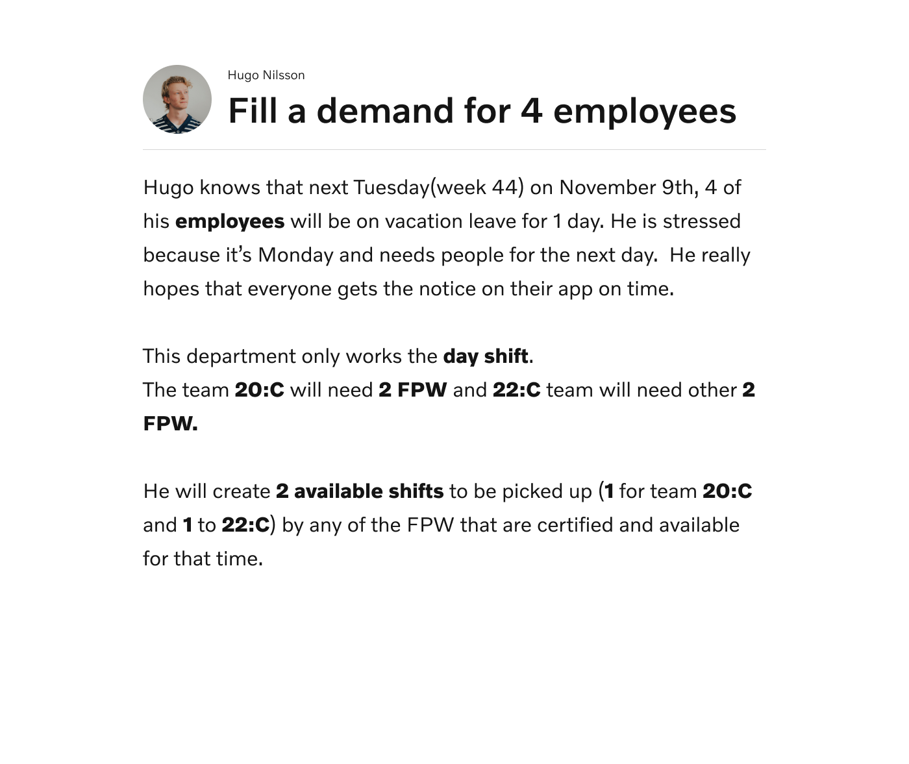
Desafios
de design
- Lógica de negócio complexa (certificações, equipas, códigos de turno, aprovações) que não podia aparecer como complexidade na interface
- Dois paradigmas de interacção num mesmo sistema: desktop para planeamento e gestão, mobile para acções rápidas no terreno
- Utilizadores com perfis e literacia digital muito distintos: supervisores experientes e operadores ou estudantes ocasionais
- Estados críticos com consequências reais: cancelar uma demanda com trabalhadores já alocados exigia comunicação clara e prevenção de erro
Plataforma web
Interface do Supervisor
Fluxo central
O fluxo central do produto é a criação de uma demanda de turno: o supervisor identifica uma necessidade, configura os parâmetros e disponibiliza o turno para os trabalhadores certificados. A interface teve de tornar esse processo imediato, mesmo com múltiplas variáveis em simultâneo.
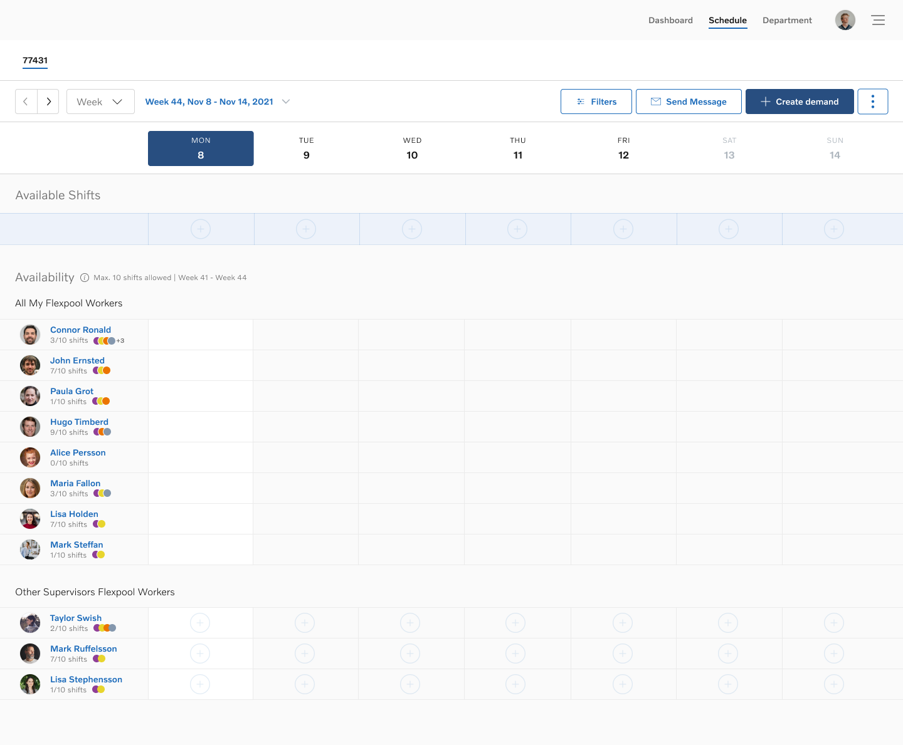
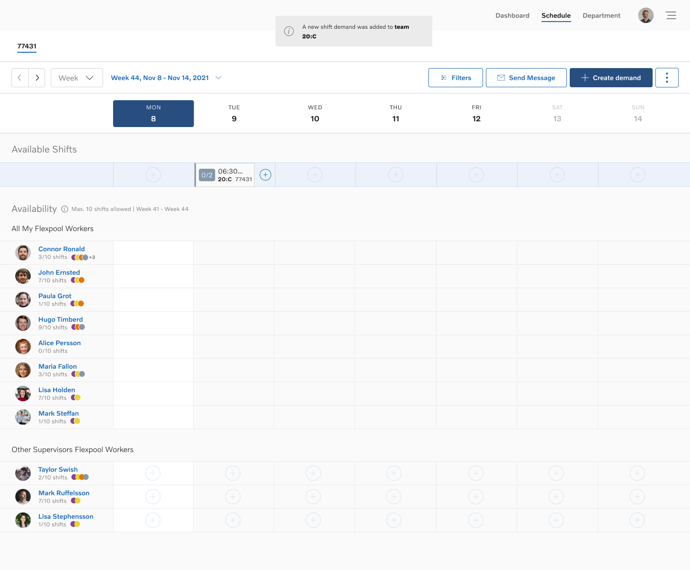

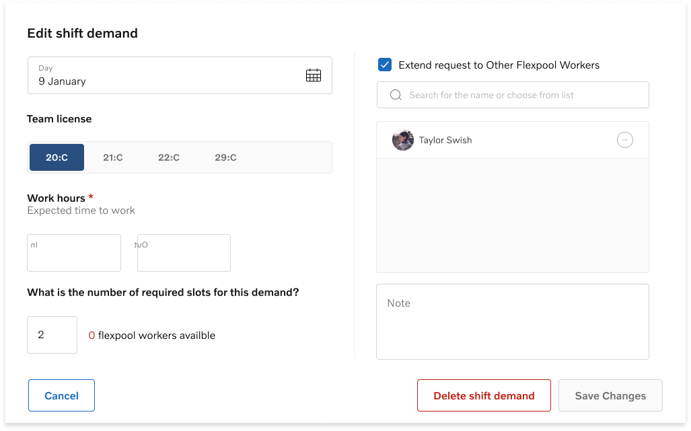
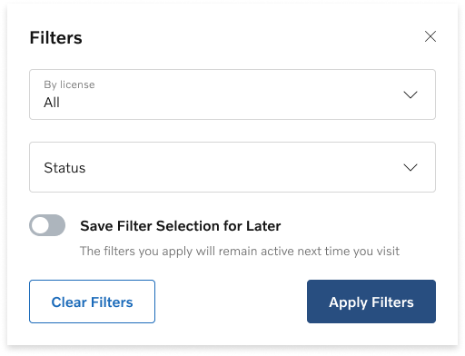
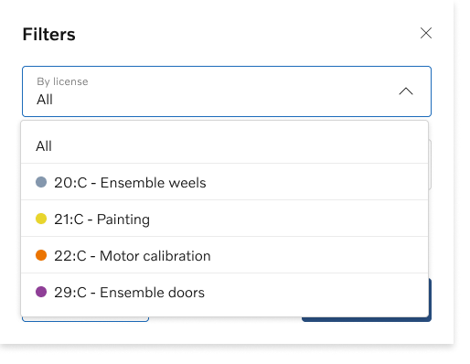
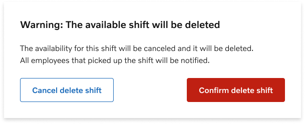
App mobile
Interface do Operador
Contexto de uso
A app foi desenhada para um contexto de uso completamente diferente: um operador ou estudante que consulta turnos disponíveis, reserva e recebe confirmação, tudo sem precisar de intervenção do supervisor.
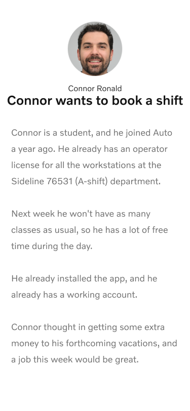
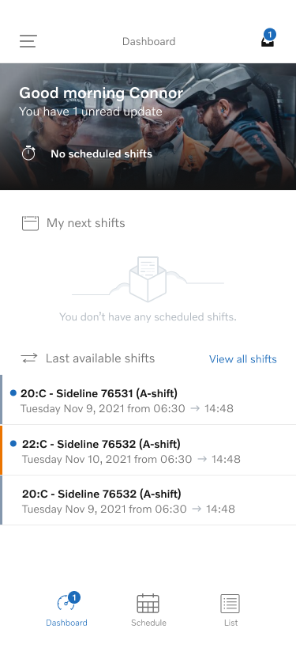
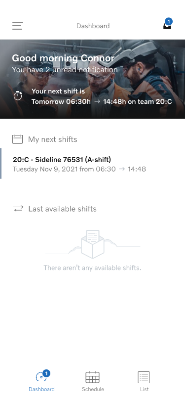
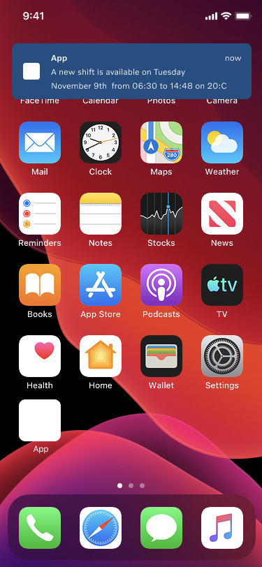
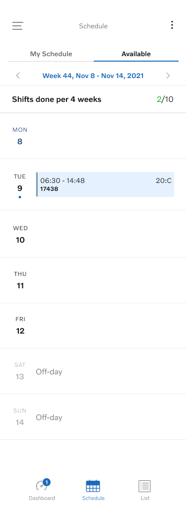
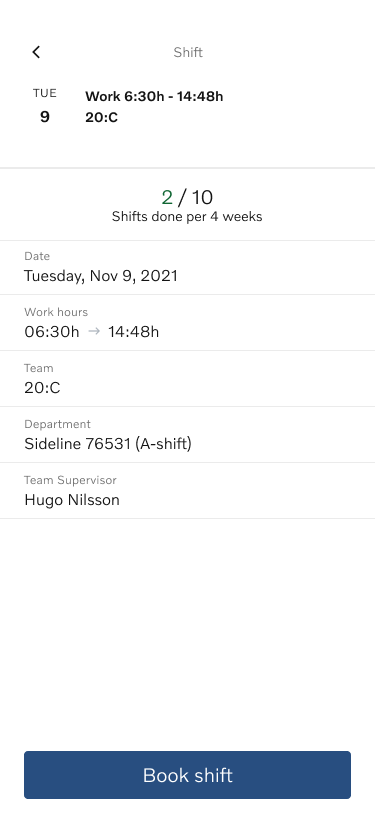
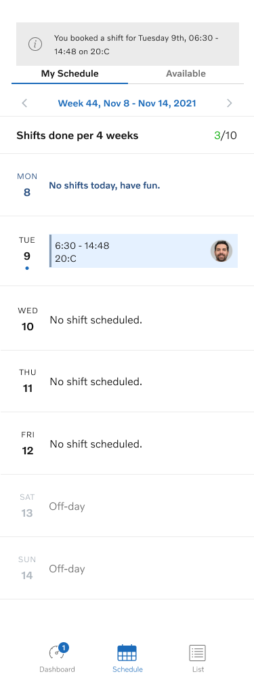
Resultado
- Produto lançado em produção com dois pontos de contacto distintos mas coerentes
- Lógica operacional complexa traduzida em fluxos que não exigem formação para serem usados
- Mecanismo de pool que eliminou contactos manuais e tornou a cobertura de ausências previsível e auditável
O que este
projecto demonstra
- Discovery em contexto industrial: identificação de dores reais com supervisores antes de qualquer decisão de interface
- Tradução de lógica operacional complexa em fluxos simples e accionáveis
- Design para dois perfis e dois paradigmas de interacção num sistema coerente
- Tratamento rigoroso de estados críticos: confirmações, consequências e prevenção de erro
- Iteração com stakeholders e utilizadores com defesa fundamentada de decisões de usabilidade
- Contribuição para a definição de modelo operacional: pool de trabalhadores como solução ao problema de cobertura de ausências